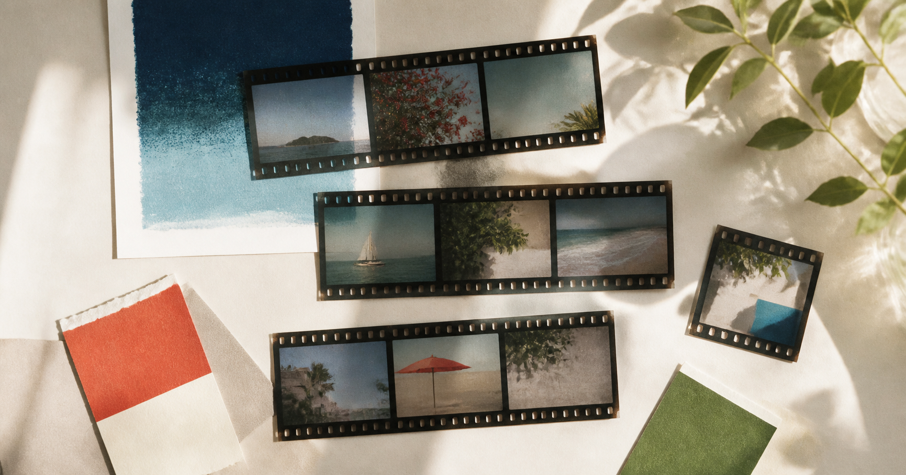

S FILM
照片仅在本机处理
LOCAL PHOTO LAB · 2026
把日常，
留在胶片里。
三种克制的胶片色彩。选照片，挑感觉，保存。没有多余步骤。

03 FILM LOOKS
20 PHOTOS / BATCH
00 CLOUD UPLOADS
YOUR LOCAL LAB
选择照片后即可实时调整PREVIEW
FUJI Classic Chrome
可一次选择多张 · 原图不会被修改 · 最多 20 张
01
选择一种胶片感觉
02
简单微调
示例预览 · 请选择你的照片
所有滤镜计算都在当前设备完成，照片不会发送到服务器。